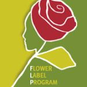
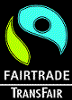
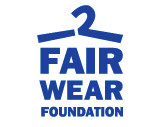
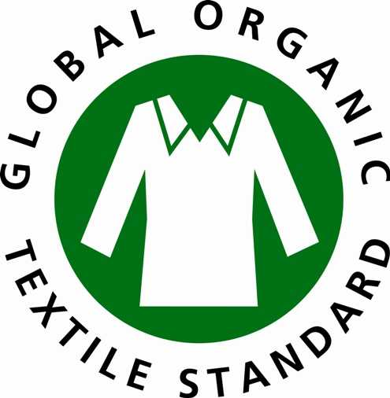

Die Zertifikate
Damit Sie als Verbraucher erkennen können, welche Produkte fair produ ziert und gehandelt werden, gibt es verschiedene Siegel und Zertifi kate die Sie beim Einkauf beachten sollten.
Flower Label Program
 Das Flower Label Programm (FLP) ist ein Zusammenschluss aus gemeinnüt zigen Organisationen und der Gewerkschaft Bauen-Agrar-Umwelt (BAU). Primäres Ziel der des FLP ist eine Verbesserung der Arbeitsbedingung en auf den Blumenfarmen in Entwicklungsländern.
Das FLP-Siegel garantiert: existenzsichernde Löhne, Gesundheitsschutz, Arbeitssicherung, keine Kinderarbeit und Diskriminierung sowie der Einsatz giftiger Pflanzenbehandlungsmittel. Unabhängige Kontrollin stitute überprüfen die Einhaltung dieser Kriterien.
Fair-Trade-Siegel
 Das Fair-Trade-Siegel wird von TransFair, einem gemeinnützigen Verein zur Förderung des fairen Handels mit der „Dritten Welt“, vergeben. Das Siegel zeichnet u.a. Schokolade, Wein und Fußbälle aus.
Mit Hilfe eines Höheren Verdienstes durch den fairen Handel können die Bauern oder Kleinhersteller ihr Existenzminimum sichern und Gelder in Straßen oder Schulen investiert werden.
Fair Wear Foundation
 Fair Wear Foundation-Textilien werden von der Fair Wear Foundation zertifiziert. Mit einem Code of Conduct werden Mitglieder der Founda tion aufgefordert, die vorgeschriebenen Arbeitsbedingungen durchzusetzen.
GOTS - Global Organic Textile Standard
 Das GOTS-Siegel ist auf Textilartikeln zu finden. Es garantiert soziale und ökologische Standards in der ganzen Wertschöpfungskette, von der Ernte der Baumwolle bis zur Produktion.